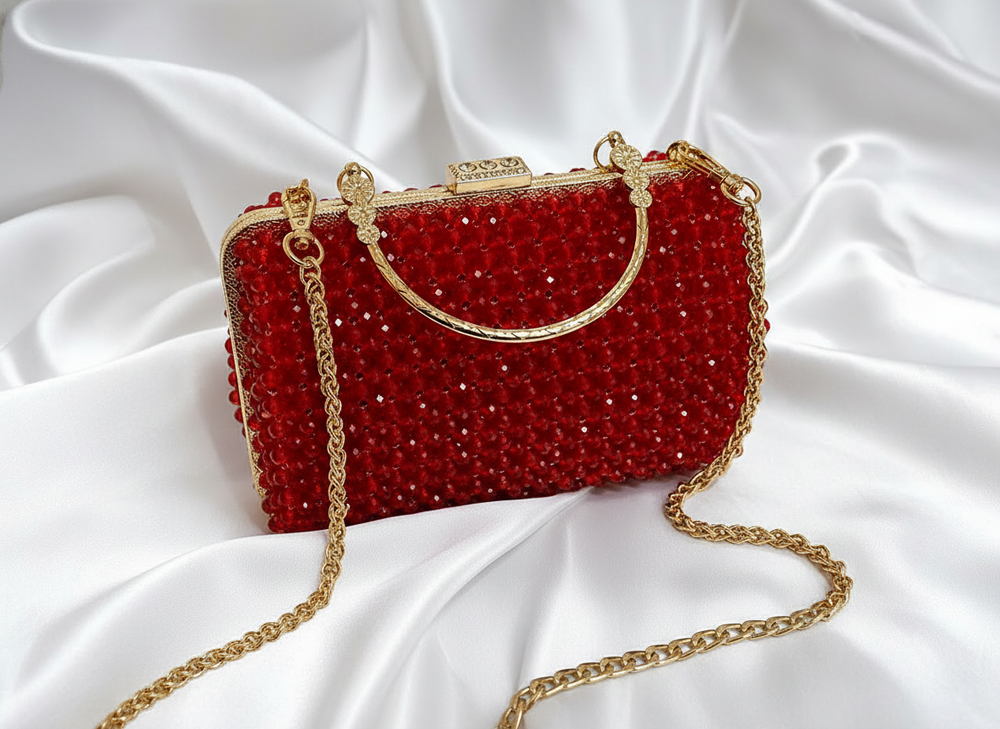
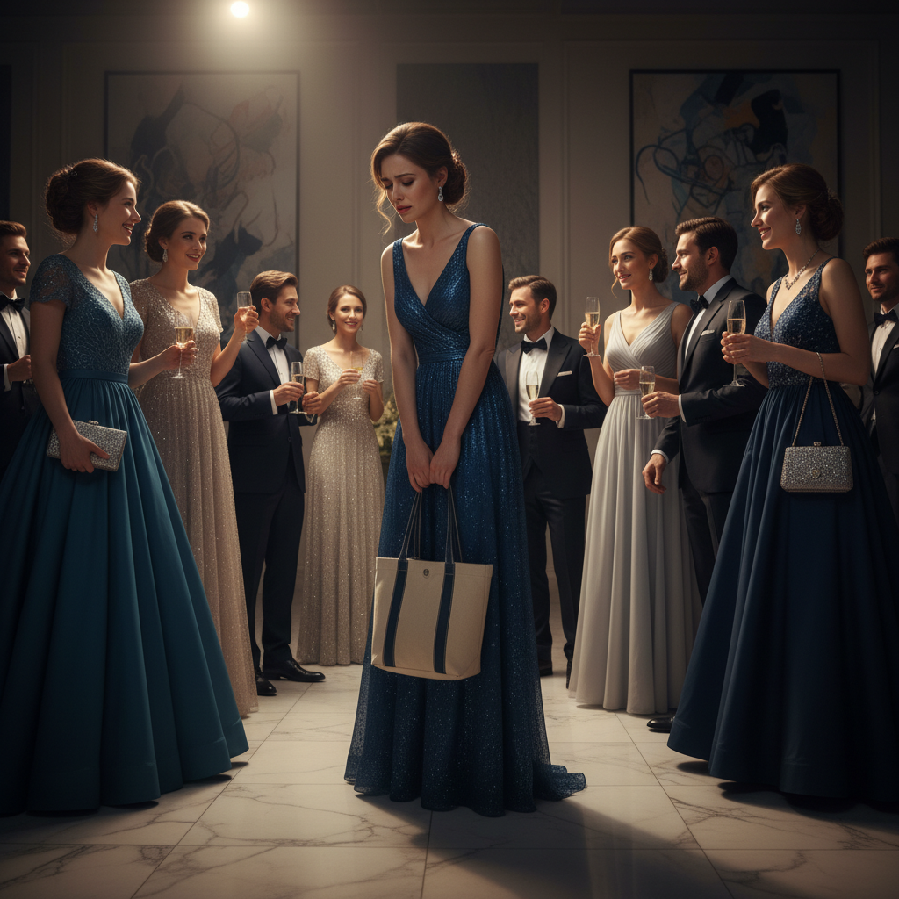
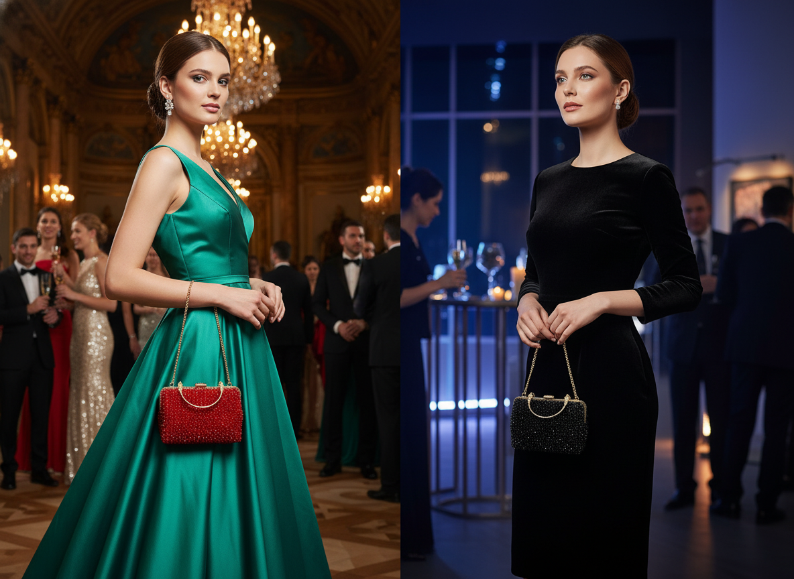
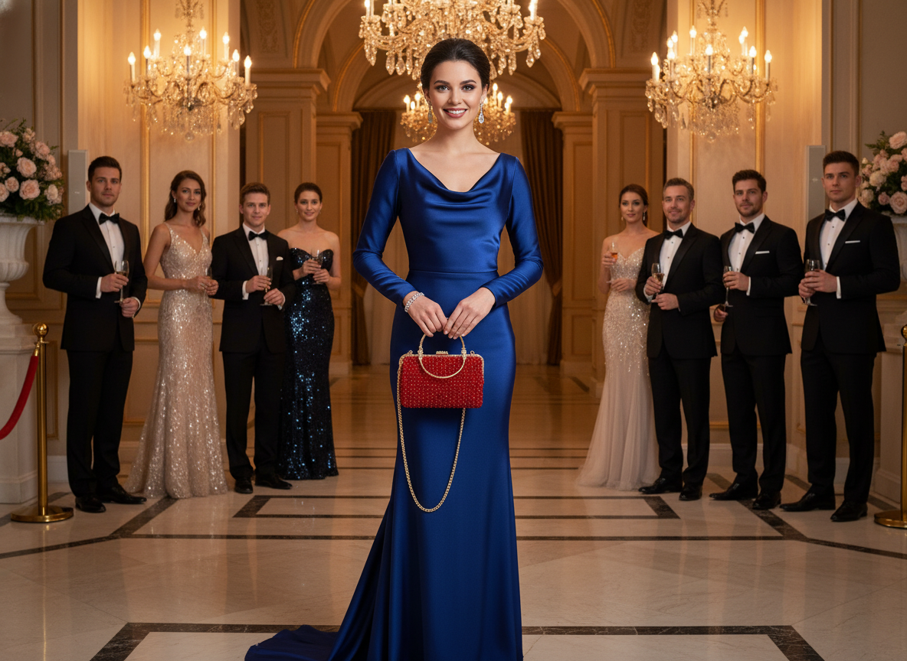

كلتش النجوم المتلألئ: الحقيبة التي تُكمل إطلالتك وتلفت الأنظار أينما ذهبتِ.
اطلبيه الآن واستمتعي بخصم خاص!

في كثير من الأحيان، تجدين الفستان المثالي وتصفيفة الشعر المتقنة، لكن ينقصكِ ذلك العنصر السحري الذي يرفع إطلالتكِ إلى مستوى آخر. الحقائب العادية لا تُعبر عن أناقتكِ، وتجعلكِ تشعرين أن شيئًا ما ناقص في حضوركِ المميز.
كل كلتش من كلتشات النجوم المتلألئة هو نتيجة عمل يدوي دقيق وشغف لا متناهٍ بالتفاصيل. يتم اختيار كل خرزة بعناية فائقة وتثبيتها يدويًا، لتشكيل نسيج متلألئ يعكس الضوء ببراعة. الإطار الذهبي المصمم بنقوش فنية والسلسلة المتينة يضفيان لمسة ملكية ويزيدان من فخامة الحقيبة، مما يجعلها تحفة فنية تستحق أن تكون جزءًا من مجموعتكِ.

سواء كنتِ تستعدين لحفل زفاف فاخر، سهرة عشاء راقية، أو أمسية خاصة، فإن كلتش النجوم المتلألئ هو خياركِ الأمثل. متوفرة بألوان كلاسيكية مثل الأحمر الناري والأسود الأنيق، لتتناسب مع مجموعة واسعة من الألوان والأنماط. تصميمها الأنيق يكمل فستان السهرة الطويل بنفس القدر الذي يبرز به جمال فستان الكوكتيل القصير، مانحًا إياكِ المرونة لتتألقي في أي مكان وزمان.

إن كلتش النجوم المتلألئ ليس مجرد مكان لحفظ أغراضكِ الأساسية، بل هو امتداد لشخصيتكِ الجذابة وذوقكِ الرفيع. إنه البيان الذي تطلقينه دون الحاجة للكلمات، يخبر الجميع أنكِ تهتمين بأدق التفاصيل وأنكِ تختارين الجودة والأناقة التي لا تُضاهى. كوني أيقونة للموضة ودعي حقيبتكِ تتحدث عن أناقتكِ الفطرية وثقتكِ المطلقة.
كل حقيبة مصممة بعناية فائقة لضمان حصولكِ على قطعة فنية لا مثيل لها.
خرز متلألئ وإطار معدني ذهبي متين لضمان الأناقة والمتانة على حد سواء.
مثالي لحفلات الزفاف، السهرات، والمناسبات الرسمية ليضيف بريقًا لا يقاوم.
مشبك إغلاق ذهبي يضمن أمان أغراضكِ مع إضافة لمسة جمالية.
مرونة في الحمل كحقيبة كلتش أو معلقة على الكتف لمزيد من الراحة.
مصمم ليكون مريحًا للحمل طوال الأمسية دون أي عناء.
4.9/5 من 250 تقييم
"اشتريت الكلتش الأحمر لحفل زفاف أختي وكان محط أنظار الجميع! الخرز لامع والجودة مذهلة. شعرت وكأنني أميرة. شكرًا لكم!"
"كنت أبحث عن حقيبة مميزة لسهراتي ولم أجد أفضل من هذا الكلتش الأسود. إنه يضيف لمسة من الرقي والفخامة لأي إطلالة. أوصي به بشدة لكل امرأة تبحث عن التميز."
"الجودة تفوق التوقعات! التفاصيل الذهبية رائعة والسلسلة قوية ومريحة. كلما حملته، أتلقى الكثير من الإطراءات. إنه يستحق كل قرش!"